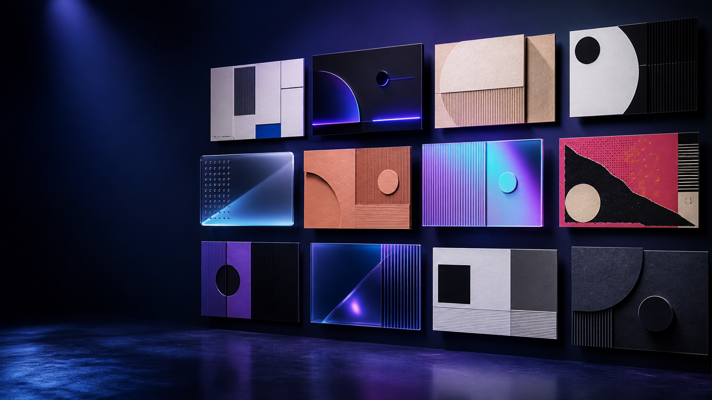
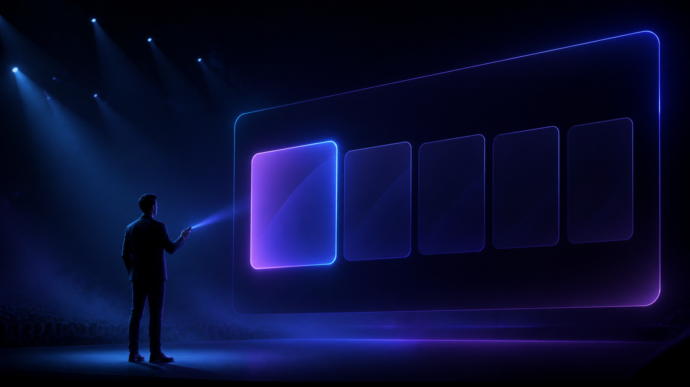

35+
设计配方
字体、颜色、阴影、排版和微动效彼此一致。
无需手动拼接复杂前端代码，在浏览器中直接输出具备顶级设计质感、响应式缩放与富交互的网页版演示文稿。
从设计选择到最终交付，把 AI 的创作能力装进有边界、有审美、可验证的工作流。
字体、颜色、阴影、排版和微动效彼此一致。
从零创作、PPTX 转换、多平台封面同步覆盖。
内联 CSS 与 JS，长期保存，打开即可演示。
图表、代码、全览、全屏、图片放大与逐步呈现。
避免模型默认落到泛滥的蓝紫渐变与通用系统字体。
每张幻灯片都服务于演示叙事，而不只是堆叠段落。
每一套都由独立 design.md 约束字体栈、颜色 Token、阴影阶梯、排版比例与微动效。
玻璃质感、弹簧物理、现代科技叙事。
网格、纸感、海报与编辑型信息层级。
霓虹、像素、极简等不同的视觉性格。
以 1920 × 1080 为唯一设计画布，用 updateScale() 保留完整比例，用视口背景同步消除硬切黑边。
不让模型一次吞下数百 K 模板代码；以轻量元数据做风格匹配，再单点读取最终规则。
先确定观众、场景和视觉，再用灰度骨架锁住结构；内容与资产只在结构确认后批量填充。
7 个问题锁定场景、篇幅、密度、素材与约束。
用主题内容比较候选风格，而非凭名称猜。
提取品牌色和字体，注入设计 Token。
先确认布局，再批量写入内容、图表和素材。
Narrative Arc：Hook → Context → Core → Shift → Takeaway，让页面不是“内容堆”，而是一场能讲下去的演示。
保留内容价值，但让交付形态适配浏览器演示与多平台传播。

公众号头图
小红书
社媒分享
不要求 Node.js、npm 或构建链；打包完成后浏览器打开即可演示，离线也不会丢失核心能力。
把复杂工程过程留在生成阶段，交付端只需要浏览器。
单个入口文件结构清晰，适合存档、复用与再编辑。
外部资源具有受信 CDN 备用与字体降级策略。
链接、文件、演讲现场都能直接开始。
图表、流程、代码和数字都可以成为叙事的一部分，而不是附在页面底部的截图。
原生交互与动态图形，适合数据讲解。
把逻辑关系变成可维护的矢量图。
数字递增、代码高亮与弹簧物理入场，让重点在正确的时刻出现。
每一份成品都带底部毛玻璃控制台、全景缩略图与完整键盘导航，而不只是一串静态页面。

不是把网页字号缩小塞进舞台；每一个层级都为投影、笔记本与演讲节奏重新校准。
避免 12–14px 的细碎小字。
图标、徽章与标题默认同一行。
让数字成为页面的视觉锚点。
双击放大，再次双击、点击背景或 Esc 退出。
T1 出血主视觉、T2 自由留白、T3 UI 截图嵌入、T6 多图安静框架；不写“原始截图”这类没有信息价值的图注，也不裁掉界面两侧的重要内容。
告诉 AI：讲给谁听、在哪讲、观众要记住什么。generate-html-ppt 会把内容、设计、交互与验证连成一条可复用的路径。